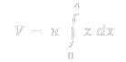
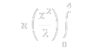

El volumen sólido de revolución es un concepto matemático interesante. Cuando giramos una curva alrededor de un eje, generamos un sólido de revolución.
Función a integrar: Tienes la función 𝑦= √𝑥. Esta es la curva que vas a rotar alrededor del eje 𝑥.
Volumen de revolución usando el método de discos: Al rotar la curva 𝑦=√𝑥 alrededor del eje 𝑥, el volumen del sólido de revolución se obtiene usando la fórmula del volumen de un disco:
Simplificar la función a integrar: Sabemos que:
Por lo tanto, la integral se simplifica a:

Evaluar la integral: Integramos 𝑥 con respecto a 𝑥:
Esta es la fórmula de la integral de 𝑥.
Evaluar los límites de integración: Evaluamos la integral definida desde 0 hasta 4:

Esto significa que primero substituimos x=4 y luego restamos el resultado de sustituir x=0.
Sustituir los límites:
Calculamos los términos individualmente:
Resultado final: Finalmente, multiplicamos por π: